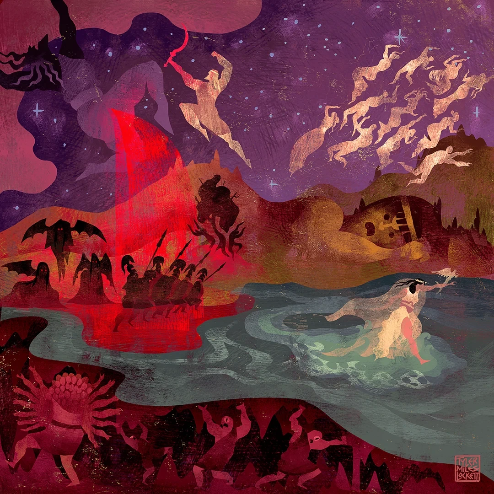
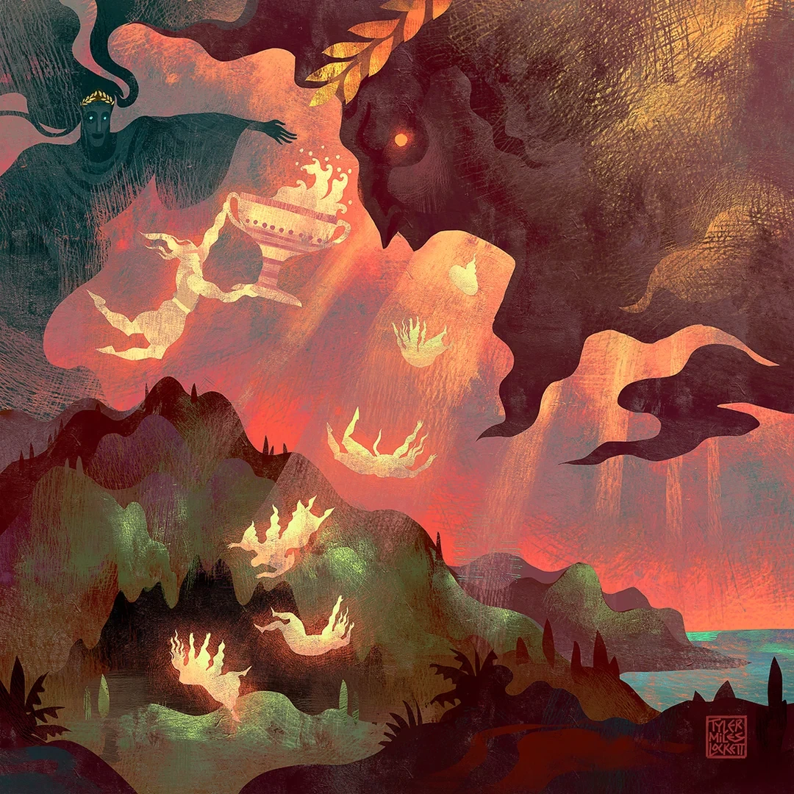
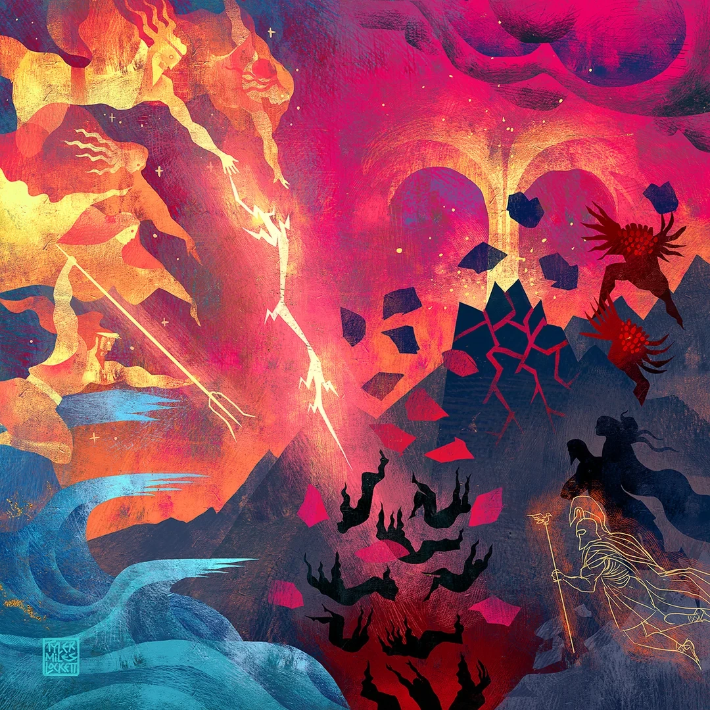

На преподавательском столе лежал небольшой свёрток из белой ткани, перетянутый золотой лентой. Кассия не стала объяснять, что в нём находится, а дождалась, пока студенты расселись, развязала ленту и вытряхнула на ладонь обыкновенный камень. Покрутила его перед собой, как-бы проверяя, не обнаружится ли в нём чего-нибудь примечательного, после чего воодушевлённо положила на стол.
— Знакомьтесь, шестой ребёнок Кроноса! Правда, сам ребёнок об этом ничего не знает, потому что он вообще-то камень. А вот Кронос был совершенно уверен, что проглотил собственного сына. Предыдущих пятерых детей он тоже проглотил сразу после рождения, поэтому его жена Рея решила шестого спасать самостоятельно: завернула камень в пелёнки и отдала мужу вместо маленького Зевса. И ведь сработало! Не знаю, насколько невнимательным нужно быть отцом, чтобы не заметить такой подмены, но, учитывая его пищевые привычки, Рее оставалось только порадоваться.
Кассия обвела взглядом аудиторию и снова взяла камень. Если подумать, совершенно простой предмет для истории о происхождении верховной власти: никакого волшебства, никаких особых свойств, просто ловко использованный булыжник. Однако именно благодаря этой хитрости у Зевса появился шанс вырасти, освободить братьев и сестёр и однажды занять место правителя богов.
— Только не спешите записывать Кроноса в чёрный список. Он не от скуки начал есть детей, хотя оправдания ему это, разумеется, не прибавляет. Ему предсказали, что собственный сын лишит его власти, и Кронос прекрасно представлял, на что способен сын против отца. Собственно, он сам когда-то это проделал. Чтобы разобраться, откуда взялась такая прекрасная семейная обстановка, нам придётся отправиться во времена, когда ни Зевса, ни Кроноса, ни даже самого неба ещё не существовало, — она убрала камень на край стола и подняла палочку. Над ней возникло знакомое звёздное небо, но тут же погасло, оставив вместо себя тёмное пространство. Она не стала расширять иллюзию на весь кабинет.
— Сегодня мы будем опираться прежде всего на «Теогонию» Гесиода. Помните, о чём говорили на прошлом занятии: это одна из древнегреческих версий, а не единственная история, которую обязаны были признавать все греки и мы, впоследствии. У других рассказчиков начало мира могло выглядеть иначе, и позднее мы к этому ещё вернёмся. А пока посмотрим, как из первых начал мира получилась семья, в которой отцы так настойчиво старались избавиться от собственных детей.
Первым, по Гесиоду, возник Хаос. При этом привычное нам слово «хаос» не очень помогает представить, что имеется в виду: речь не о беспорядке, где вещи разбросаны по комнате и никто не может найти второй носок, а о первоначальной зияющей пустоте. Затем появляется Гея — Земля, Тартар — глубокая бездна под нею, и Эрос, древнейшая сила влечения. Здесь Эрос ещё не мальчик с луком, который вмешивается в чужую личную жизнь: это первичная сила, связанная с притяжением и соединением. Не путайте ранний космический образ с более поздним персонажем, иначе окажется, что во времена до возникновения неба кто-то уже бегал по пустоте со стрелами. Гея сама породила звёздное Небо — Урана, горы и море. Уран раскинулся над нею, стал её супругом, и у них появилось многочисленное потомство. Сначала двенадцать титанов: шесть сыновей и шесть дочерей, среди которых были Кронос и Рея. Затем трое циклопов, одноглазых великанов; название «киклопы», если встретите его в другой книге, обозначает тех же существ. И наконец, трое сторуких, или гекатонхейров, у каждого по сотне рук и по пятьдесят голов. — Кассия вывела над столом небольшие изображения трёх групп, задержавшись на сторуком великане, которому и в уменьшенном виде явно было тесно среди остальных. — Не представляю, как можно было бы сшить такому мантию. Хотя за возможность одновременно проверять сотню работ я, пожалуй, согласилась бы с ним поменяться.
Впрочем, Уран вовсе не радовался такому богатству наследников. Гесиод рассказывает, что он ненавидел своих детей и не позволял им появиться на свет, скрывая в недрах Геи. Для самой Земли это обернулось мучением: её собственное потомство оставалось запертым внутри неё, а супруг, судя по всему, не собирался ничего менять. Гея создала огромный серп и предложила детям выступить против отца, но решился на это только младший из титанов — Кронос. Гея спрятала Кроноса в засаде и вручила ему серп. Когда Уран приблизился к супруге, сын напал на него и оскопил.
Кассия не стала изображать всё происходящее в подробностях: одного взмаха появившегося над столом металлического лезвия было вполне достаточно. От крови Урана, упавшей на Землю, произошли новые существа, а отсечённая часть тела попала в море, где вокруг неё собралась белая пена. Из этой пены родилась Афродита.
— А вот и знакомое лицо! Помните, на первой лекции мы спорили, кто родители Афродиты? Теперь вы знаете, в каком месте она появляется у Гесиода. Зевс ещё даже не родился, а богиня уже существует. Так что перед вами не просто разница между «дочерью Зевса» и «девушкой из морской пены»: в разных версиях у неё совершенно разное место среди поколений богов.

После свержения Урана власть перешла к Кроносу. Казалось бы, человек, выросший в семье, где отец мучил мать и не выпускал детей на свет, вполне мог бы решить, что сам поступать так не станет. Но Гея и Уран предсказали Кроносу, что он тоже будет свергнут собственным сыном, и новый правитель выбрал довольно своеобразный способ обезопасить себя. Как только Рея рожала ребёнка, он его проглатывал. Так в его чреве оказались Гестия, Деметра, Гера, Аид и Посейдон. Погибшими они не считались, но возможности свободно жить и вырасти у них, разумеется, не было.

— И да, дочерей он тоже глотал, хотя предсказание говорило именно о сыне. Почему Кронос не делал различий — вопрос интересный, только ответа у Гесиода нет. Может, не хотел рисковать, может, боялся любого ребёнка или считал, что таким образом надёжнее сохранить власть. Всё это наши предположения, и я бы предпочла, чтобы вы отличали их от того, что действительно рассказал древний автор.
Рея успела потерять пятерых детей и совершенно не собиралась отдавать мужу шестого. Тогда она обратилась за помощью к Гее и Урану, и те подсказали, как спасти младенца. На острове Крит Рея родила Зевса, а Гея укрыла его в пещере. Мужу же достался тот самый камень в пелёнках, — его Кассия вновь подняла со стола. — Вот и весь секрет. Один камень, немного решимости и супруг, который не очень интересовался содержимым собственного ужина. Правда, дальше всё становилось сложнее: спрятать новорождённого — не то же самое, что свергнуть правителя мира.
Детство Зевса на Крите разные античные авторы описывали по-разному. Главное для сегодняшнего рассказа состояло в том, что мальчик вырос вдали от отца и смог вернуться, когда у него появились силы действовать. Однако прежде, чем бороться за власть, нужно было освободить остальных детей Реи. По совету Геи Зевс сумел заставить Кроноса извергнуть проглоченное. Гесиод не объясняет подробно, каким именно способом сын этого добился, хотя в поздних пересказах можно встретить более яркие истории. Первым вышел камень, проглоченный последним, а затем на свободу вернулись Посейдон, Аид, Гера, Деметра и Гестия.
— Представляете, что это значило для Реи? Пятеро детей, которых она лишилась сразу после рождения, снова оказались рядом с ней. Но не будем делать вид, что на это всё закончилось мирно. Кронос всё ещё правил, а Зевс уже мог предъявить ему куда более серьёзные претензии, чем стоимость проглоченного камня.
Началась Титаномахия — война Зевса и его союзников с Кроносом и теми титанами, которые его поддержали. Не путайте её с Гигантомахией: это другое столкновение, и о нём будет отдельный разговор. По рассказу Гесиода война продолжалась десять лет, причём сам факт родства с Кроносом не означал, что любой титан обязательно воевал за него. Боги нового поколения укрепились на Олимпе, но долгое время ни одна сторона не могла окончательно победить другую.
Кассия развернула под потолком две группы фигур, оставив между ними широкую долину. Над одной стороной появился Олимп, над другой — войско Кроноса. Несколько условных вспышек молний, сдвинувшиеся каменные глыбы и долгая пауза между двумя застывшими сторонами неплохо передавали затянувшуюся войну.
— Вспомните циклопов и сторуких, которых Уран когда-то скрывал в недрах Геи. Зевс освободил их, и это изменило положение сторон. Циклопы дали ему гром и молнии, а сторукие, обладавшие огромной силой, вступили в войну на его стороне. Оказывается, иногда для победы полезнее обзавестись союзниками, чем десятый год подряд доказывать, что ты и сам прекрасно справишься.
Молнии Зевса и каменные глыбы сторуких обрушились на противников. Силы Кроноса потерпели поражение, а побеждённых сторонников старого правителя заключили в Тартар. Сторуким поручили охранять пленников — тем самым существам, которых прежде старались спрятать от мира и чья свобода в итоге помогла положить конец власти Кроноса. Кассия убрала фигуры сражающихся и показала глубокую тёмную пропасть, в которую опустились побеждённые, а у входа остались могучие стражи. Победа завершила долгую смену поколений богов. По совету Геи боги признали Зевса своим царём. Вокруг него теперь находились братья и сёстры, которых спасла Рея, а прежний правитель лишился власти, которую так отчаянно пытался сохранить.

Гриффиндорка оставила над столом только Олимп и шесть небольших фигур, а рядом с настоящим камнем аккуратно сложила белую ткань.
— Вот теперь можно вернуться к тому, с чего мы начали. Когда говорят, что Зевс — царь богов, очень легко вообразить, что он был им всегда, а мир с самого начала устроен знакомым нам образом. Но до него уже существовали и Земля, и Небо, и первые поколения божеств; власть успела перейти от Урана к Кроносу, а потом к Зевсу. И заметьте, сам Зевс вовсе не сделал всё в одиночку. Гея предложила план против Урана, затем помогла Рее спасти ребёнка, Рея рискнула обмануть Кроноса, а циклопы и сторукие помогли закончить войну.
Она немного помолчала, давая ребятам закончить записи, и, заметив, что кто-то всё ещё старательно выводит имена титанов, добавила:
— Мы сегодня прошли только одну линию происхождения мира и прихода Зевса к власти. Позже у нас будет отдельный блок о космогонии, где мы сможем подробнее поговорить о древнейших силах и других версиях начала мира. А пока мне хотелось, чтобы вы запомнили не только страшные поступки невнимательного Кроноса и многострадальный камень, но и саму последовательность событий: прежде чем Зевс стал верховным богом, миру пришлось пережить несколько поколений. На этом всё, мои ласточки. Домашние задания ждут вас на столах, а камень я, пожалуй, оставлю себе — на память о человеке, которого однажды победила невнимательность к содержимому пелёнок.